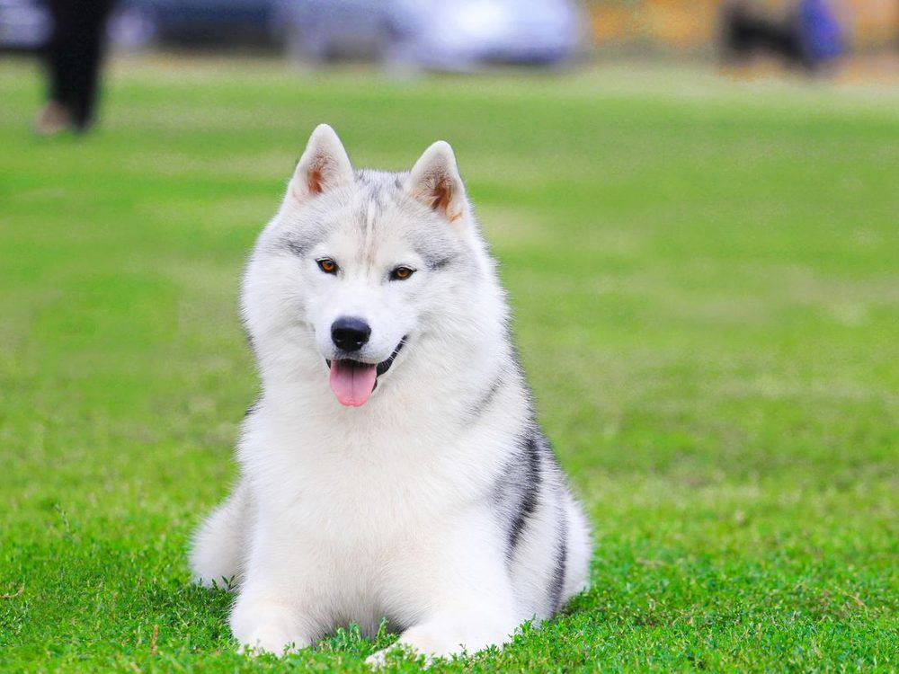

Friendship Park Dog Park 60+ acre community park north of I-10
- Fenced Not stated by the city
- Water Water bottle refill stations are on the park’s amenity list (not stated whether one is at the dog park)
- Shade Not stated for the dog park (the park has picnic ramadas)
- Small-dog area Not stated by the city
- Restrooms Not stated by the city
- Hours Daily 6 a.m.–10 p.m. (city community park hours)
The city lists a dog park among Friendship Park’s amenities (its community parks overview says “dog parks”) but doesn’t publish a dog park layout or amenity list, so fencing, shade, and size sections are marked “Not stated.” The rest of the 60+ acre park has 9 multi-use fields, ballfields, tennis and basketball courts, a splash pad, 3 playgrounds, walking trails, a community fishing pond, a Japanese garden, and picnic ramadas. City of Avondale: Friendship Park.